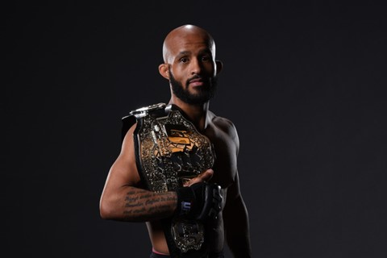
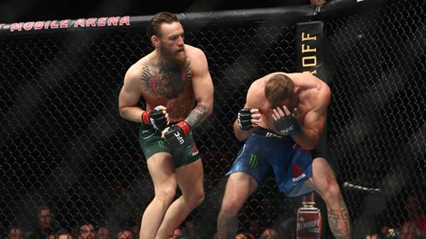
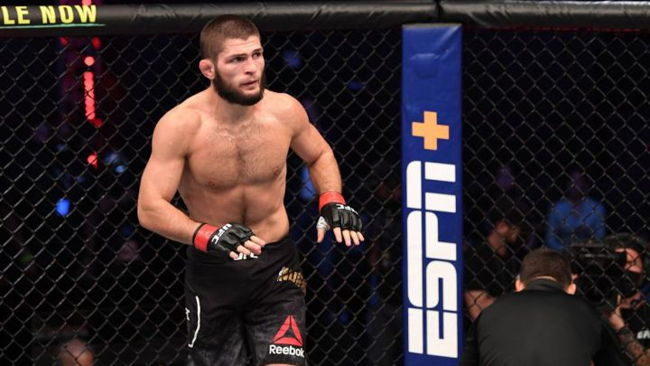
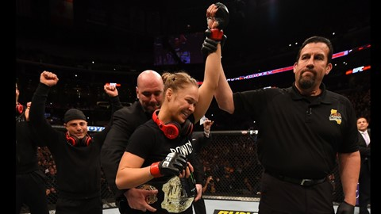
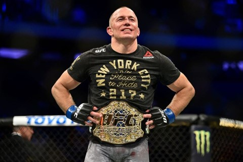
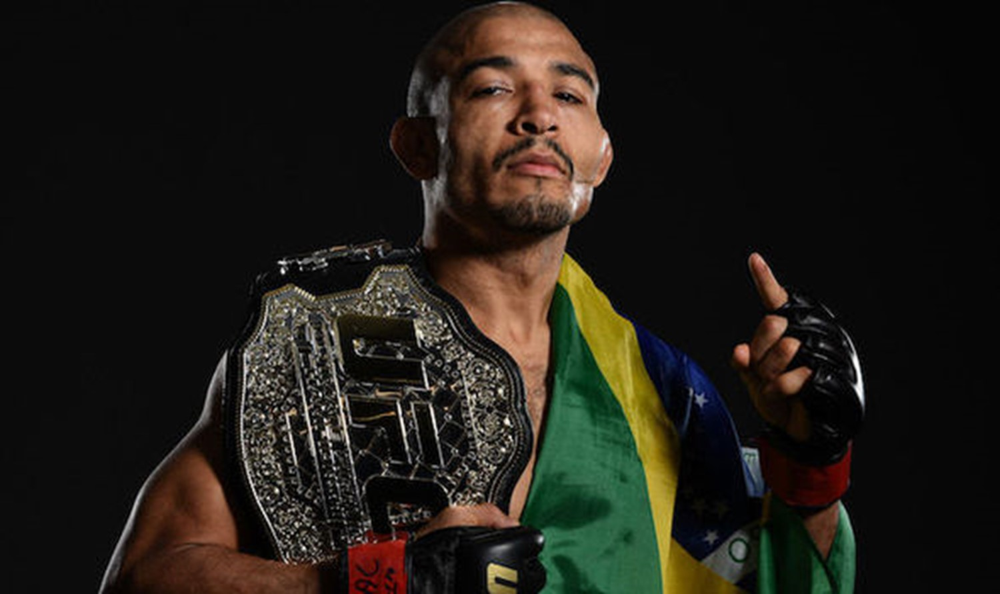
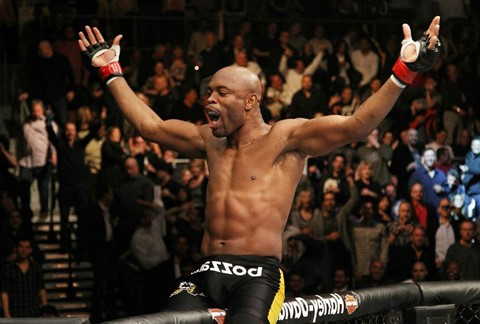

Mejor luchador de MMA: ¿Cuál es la historia de UFC?
Uno de los deportes más duros que nos ha dado a los luchadores Las artes marciales combinadas están ganando cada vez más adeptos. Una forma relativamente moderna de luchar cuando no necesitas simpatizar con tus oponentes, pero mostrar el mayor respeto.
A lo largo de los años, hemos visto a atletas legendarios dar lo mejor de sí mismos en la alfombra. Vamos a repasar a los mejores luchadores de MMA.
Demetrious Johnson

Demetrious Johnson entró en sus filas de carrera debido a su trabajo de divulgación. Dejó el UFC, un ex campeón de peso mosca, y ahora juega en la división de peso mosca de One Championship.
Su carrera comenzó fuerte con una fácil victoria en su primera carrera con una victoria en la primera ronda. También ganó sus ocho batallas, cuatro de ellas con permiso. Con eso hizo que todos hablaran de él y realizó una actuación fantástica de 29 victorias, 3 derrotas y 1 empate.
Conor McGregor

La mejor actuación de Conor McGregor ha sido llevar la lucha a todos los hogares. Gracias a su comportamiento travieso, no hay duda de que es uno de los luchadores más apasionados. También es conocido por su increíble personaje que cayó del octágono, pero también estuvo involucrado en batallas y arrestos.
Genio, aunque sigue siendo criticado por no luchar lo suficiente para defender su nombre, le robaron por no trabajar. El irlandés suma 22 victorias, 19 de ellas por nocaut y 4 derrotas.
Khabib Nurmagomedov

Subtítulos frecuentes con potencial peligroso. Khabib Nurmagomedov permanece invicto. Es doble campeón mundial de sambo y ahora campeón de UFC, primer ruso. Una vez atrapado, casi no podía irse.
Defendió su título en 2018 por primera vez ante McGregor, a quien venció en el cuarto round por sumisión. No dio ninguna opción al luchador irlandés. Nurmagomédov, de 31 años, está invicto a estas alturas, con 28 victorias en 28 combates. Posee la racha más larga sin derrotas de la MMA.
Ronda De Rousey

La retirada Ronda Rousey es una de las mejores luchadoras de UFC y es sin duda un ícono femenino de las artes marciales mixtas que perdió 48 segundos en el primer asalto a pesar de los reproches que recibió en la pelea final. No empañó su carrera ya que fue la primera campeona de la División de Peso Pesado Femenino de UFC.
Casi siempre tiene las habilidades para destruir a su competencia con entregas. Su apariencia va más allá de UFC, como verás en una película o película de la WWE, o incluso después de ganar un premio de judo en los Juegos Olímpicos de Beijing 2008. Los dos últimos.
John Jones
Jon Jones es el peso semipesado actual de UFC y tiene el récord del peso semipesado más joven en la historia del torneo (23 años y 8 meses).
Posee la categoría de protección de datos con ocho títulos de protección consecutivos. Sólo 26 victorias y una derrota garantizaron su carrera.
Georges saint-pierre

Para muchos, es uno de los mejores luchadores de la historia. Es dos veces campeón de peso welter de UFC. Después de una pausa de casi cuatro años, regresó al octágono en 2017. Cuando venció a Michael Bisping para ganar el título de peso mediano y convertirse en el campeón de peso pesado de UFC, no terminó esas cuatro peleas. Su récord es de 26 victorias y 2 derrotas.
Jose aldo

El luchador brasileño José Aldo también tiene su lugar gracias a su brillante trabajo. Actualmente se encuentra en la división de peso gallo de UFC. Es el primer campeón de peso pluma de UFC. Durante muchos años fue el mejor jugador de su equipo y en 2009 fue nombrado jugador del año.
En su memoria, perdió ante McGregor en una pelea de peso pluma en 13 segundos, obteniendo la victoria más rápida en la historia de las MMA. Al igual que el cambio de categoría, su récord es de 28 victorias de 34 conbates.
Anderson silva

Conocido como "Spider-Man", el luchador brasileño ha durado más tiempo en la clase de peso mediano con diez títulos defensivos. Por tanto, es considerado uno de los mejores de la historia. Su currículum está embellecido con 34 victorias y 9 derrotas